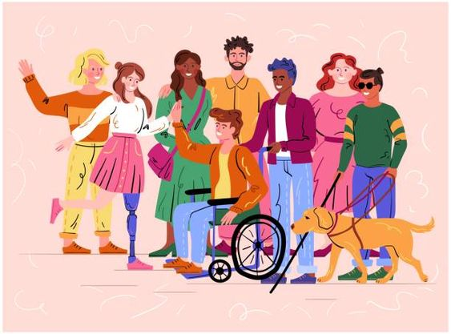

ICMLS
QUEM SOMOS
ICMLS – instituição de comunicação mundial de linguagem de sinais.
Origem- um ministério Brasileiro da comunicação, ONG de apoio do governo.
Financeiro – arrecadação de impostos, cerca de 20 milhões de pesquisas, e apoiocomunidade de libras.
Criadores- criando em 1934 por Getúlio Vargas em apoio de cientistas e pesquisadores
Objetivo- facilitar e auxiliar a comunicação da população brasileira a grupos sociais de deficientes específicas em detrimento a solução a facilitar a comunicação de libras.

voltar
Como fazemos
A ICMLS desempenha um papel fundamental na inclusão e na comunicação acessível em diversos países. Através do uso de gestos, expressões faciais e movimentos corporais, a ICMLS possibilita a comunicação efetiva entre pessoas surdas e ouvintes. Em termos de soluções, a disseminação e o ensino da LIBRAS em escolas e instituições públicas contribuem para a inclusão social, promovendo a igualdade de oportunidades para as pessoas surdas. Além disso, a tradução e interpretação em LIBRAS durante eventos, conferências e transmissões de mídia garantem o acesso à informação e a participação plena da comunidade surda na sociedade.
CURIOSIDADES
Curiosidade 1
A ICMLS já alfabetizou mais de 50 milhões de pessoas na linguagem de libras.
Curiosidade 2
A ICMLS é a instituição número 1 em ajudar pós soldados recém chegados da guerra que alfabetiza, pós acontecimento de alguma deficiência acontecida na guerra.
Curiosidade 3
A ICMLS produz mais de 10.000 palestras por ano em escolas e redes de ensino para alfabetização das libras por todo o mundo ha mais de 10 anos.
Curiosidade 4
Graças a ICMLS o Brasil se tornou o país numero 1° com maior falantes de linguagem de sinais.
Curiosidade 5
A ICMLS está com um projeto de colocar uma filial em cada continente, para facilitar a velocidade de atendimento.
Curiosidade 6
Existe uma conta da ICMLS para cada rede social, então é muito facil de acessar e tambem, estamos com vagas abertas para quem quiser ser jovem aprendiz.
FUNDADORES
Samuel rocha - pesquisador, e cientistas.
Matheus Parizoti - um dos diretores chefs.
Samuel Macedo - associado e auxiliar.
Samuel Nunes - um dos conselheiros chef.
Gustavo Marcolino - um dos conselheiros chef.
Renan dos Anjos - associado e auxiliar.